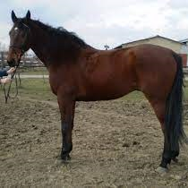
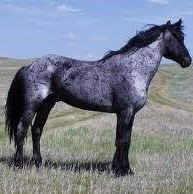
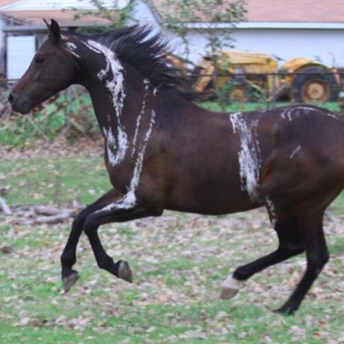

Alap színek
Fekete
- Hollófekete
- Almázott koromfekete
- Bársonyfekete
- Bogárfekete
- Nyárifekete: télen, a festékanyag megfogyatkozása következtében a szőrök enyhén barnásvörös árnyalatúak, nyáron azonban a fokozottabb pigment termelés miatt, a sima rövid szőrök fénylő feketének látszanak
Fehér
- Selyemfehér vagy keselyfehér, a fehér ló születésétől fogva fehér színű. Bőrében nincs festékanyag, a patái viaszsárgák, az ajkai hússzínűek. Albínónak is nevezik, bár ezek a lovak nem valódi albínók, mivel az albínó lovak magzati korban elpusztulnak.
- Almázott koromfekete
- Patyolattiszta
- Ezüstfehér ez a szín a korral alakul ki.
Fakó
- Mosottsörényű fakó
- Kendersörényű fakó
- Tajték fakó
- Varjúfakó
- Gerle fakó
- Egérfakó
- Hamvasfakó
- Farkasfakó
- Izabellafakó: annyiban egyezik a fakóval, hogy az alapszőrzet világosbarna vagy sárga, a sörény és farokszőrzet azonban fehér, azaz "szőke". A palomino lófajta színe, sokszor fehér jeggyel párosul.
- Zsufafakó: világossárga fedőszőr, sötétszürke hosszúszőr
- Fátyolfakó: a fedőszőrök egészen világos árnyalatúak, a hosszúszőrök majdnem fehér színűek
- Rozsdafakó
- Cserfakó
- Toronyi-fakó
- Pálfi-fakó
Pej
- Meggypej
- Szattyánpej
- Mogyorópej
- Gesztenyepej
- Sötétpej
- Világospej vagy Fehérpej
- Hópej
- Pirospej
- Tüzespej
- Tulipiros pej
- Cseresznyepej
- Fakópej
- Barnapej
- Pejderes
- Vöröslábú pej

Sárga
- Aranysárga
- Vörössárga
- Sötétsárga
- Agyagsárga vagy Szennyessárga
- Májsárga
- Bronzsárga
- Izzadtsárga
- Fátyolsárga vagy Kenderfarkú sárga
- Szögsárga vagy Szénsárga
- Őzelt sárga
- Koromsárga
- Sárgafakó
Kevert színek
Deres
- Vércsederes: sárga fedőszőrbe fehér szőrszálak keverednek.
- Pejderes: barna fedőszőrbe fehér szőrszálak keverednek.
- Vasderes: a szürke fedőszőrzetbe fehér szőrszálak keverednek.
- Almázott: a fehér színű szőrön kerek szürkés foltokat formáz a szőr színe.
- Feketevércse
- Sárgavércse
- Pejvércse
- Kékderes

Szürke
- Szeplős- vagy legyesszürke: világosszürke alapon sötét, általában barna pettyes, mintha ellepték volna a legyek
- Almásszürke vagy Almázott szürke: szőrében fekete és fehér kör alakú foltok vannak.
- Acélszürke: a ló fekete fedőszőrzetén át elővillannak a fehér szőrszálak.
- Almázott: a fehér színű szőrön kerek szürkés foltokat formáz a szőr színe.
- Pisztrángszürke
- Daruszürke vagy Daruszőrű
- Ezüstszürke
- Palaszürke
- Mézszürke
- Seregélyszürke
Tarka
- Sárgatarka: fehér szőr alapon sárga foltok
- Feketetarka: fehér szőr alapon fekete foltok
- Párductarka: a ló fehér szőrét barna vagy fekete foltok tarkítják.
- Pejtarka: fehér szőr alapon pej foltok
- Habostarka
- Agáttarka
Különleges, ritka lószínek
Zebra-tarka
